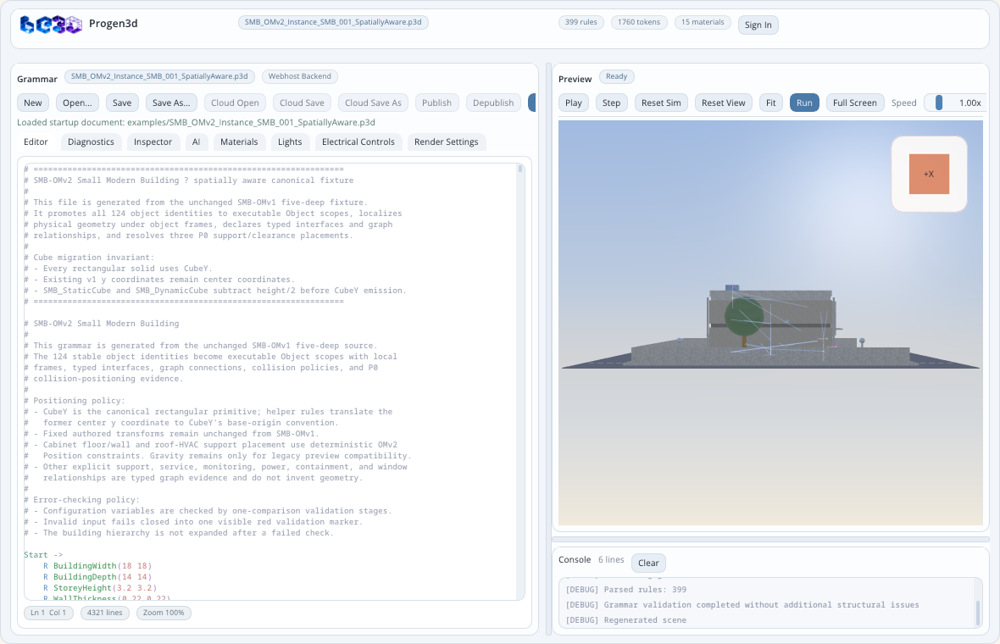

This section preserves the complete Markdown document as semantic HTML, rewrites valid Markdown links to generated lessons, copies genuine referenced images into the published site, and visually marks proposed, pending, failed, passed, and unresolved statements.
ProGen3D
Reading guide: this source section records “ProGen3D”. Distinguish stated behavior from proposed or pending work using the status styling.
ProGen3D is a Linux desktop editor and runtime for procedural 3D grammars. It combines a source editor, structural diagnostics, deterministic scene regeneration, an interactive OpenGL preview, physically based materials, authored lighting and electrical controls, spatial object inspection, collision-aware placement, and evidence-oriented validation.
The repository includes examples ranging from a single cube to spatially aware modern buildings, a 20-level architectural taxonomy, chairs, vehicles, vegetation, temporal geometry, and advanced procedural primitives.

Contents
Reading guide: this source section records “Contents”. Distinguish stated behavior from proposed or pending work using the status styling.
Quick start
Reading guide: this source section records “Quick start”. Distinguish stated behavior from proposed or pending work using the status styling.
Supported desktop baseline
Reading guide: this source section records “Supported desktop baseline”. Distinguish stated behavior from proposed or pending work using the status styling.
- Linux
- C++17
- GNU Make
- Dear ImGui 1.90.1
- GLFW and OpenGL
- GLM
- libcurl with OpenSSL
- D-Bus and the XDG Desktop Portal file chooser
The expected third-party source layout is under third_party/. Native File Dialog Extended uses the XDG portal backend on Linux.
Build
Reading guide: this source section records “Build”. Distinguish stated behavior from proposed or pending work using the status styling.
make clean
make -j2 all
The complete build produces the editor, compatibility link, textured-mesh
converter, and orthographic three-view converter:
./progen3d-editor-gui
./progen3d
./p3d_to_3dtexmesh
./p3d_to_3view
Run the editor:
./progen3d-editor-gui
The compatibility target creates the progen3d symbolic link:
make progen3d
./progen3d
Create the deterministic Linux binary bundle and its SHA-256 file with:
make package
./tests/run_conversion_package_checks.sh
The archive is written to
build/packages/progen3d-linux-x86_64.tar.gz.
See BUILDING.md for the complete build, clean-state, and dependency notes.
Open a modern building
Reading guide: this source section records “Open a modern building”. Distinguish stated behavior from proposed or pending work using the status styling.
Open the spatially aware Small Modern Building with its evidence overlays enabled:
./progen3d-editor-gui \
--spatial-overlays \
--open examples/SMB_OMv2_Instance_SMB_001_SpatiallyAware.p3d
Open the 20-level courtyard building:
./progen3d-editor-gui \
--spatial-overlays \
--open examples/Complex_Modern_Courtyard_Building_OM20/Complex_Modern_Courtyard_Building_OM20.p3d
Screenshot walkthrough
Reading guide: this source section records “Screenshot walkthrough”. Distinguish stated behavior from proposed or pending work using the status styling.
The main window is deliberately arranged as a three-part authoring workspace: grammar source on the left, a live preview on the upper right, and generation/runtime messages on the lower right.
The screenshot is a complete desktop session, not a preview-only render. Open it at full size and read the interface from top to bottom:
First-session walkthrough
Reading guide: this source section records “First-session walkthrough”. Distinguish stated behavior from proposed or pending work using the status styling.
- Start the editor and choose
Continue Offline if cloud and AI services are not required.
- Select
Open... and load examples/SMB_OMv2_Instance_SMB_001_SpatiallyAware.p3d.
- Wait for the Preview status to return to
Ready; the Console should report parsed rules, successful validation, and scene regeneration.
- Drag inside the viewport to orbit the building, scroll to zoom, and use
Fit if the model leaves the frame.
- Click a visible primitive, then open
Inspector to see its immutable primitive snapshot and associated SMB object.
- Enable
Overlay, open Overlay Options, and select the SMB object frames, interfaces, bounds, connections, constraints, contacts, or clearances needed for the review.
- Return to
Editor, make a small source change, and observe the automatic-run countdown in the editor status row.
- Introduce a temporary syntax error to see Diagnostics and Console reject the candidate while the Preview retains the last valid scene.
- Correct the error and press
Run to regenerate immediately.
- Use
Save As... before modifying generated examples; regenerate source packages through their generator scripts when the example declares a generated authority.
Reading guide: this source section records “1. Application header”. Distinguish stated behavior from proposed or pending work using the status styling.
The header identifies the current document and summarizes the active session:
- document name;
- rule count;
- token count;
- material count;
- authenticated role and credit status when a backend session is active;
Sign In or Sign Out.
The header is informational. Document commands are grouped in the Grammar workspace immediately below it.
Reading guide: this source section records “2. Grammar document toolbar”. Distinguish stated behavior from proposed or pending work using the status styling.
The Grammar toolbar owns the local and cloud document lifecycle:
Status chips report Webhost Backend, Cloud linked, Modified, Published, Regenerating, Queued update, or the remaining automatic-run delay.
3. Workspace tabs
Reading guide: this source section records “3. Workspace tabs”. Distinguish stated behavior from proposed or pending work using the status styling.
The tab row changes the left-hand workspace without hiding the preview:
Editor — source authoring and syntax assistance.Diagnostics — navigable parser, semantic, and generation diagnostics.Inspector — selected primitive and SMB spatial-object evidence.AI — review-controlled assistant conversations and grammar proposals.Materials — material vocabulary, PBR previews, and texture-library controls.Lights — scene-light presets, authored lights, shadow settings, and evidence.Electrical Controls — switches, dimmers, fixtures, and circuits.Render Settings — anti-aliasing, textures, shadows, post-processing, environment, and tone mapping.
4. Smart grammar editor
Reading guide: this source section records “4. Smart grammar editor”. Distinguish stated behavior from proposed or pending work using the status styling.
The Editor tab provides:
- syntax highlighting for rules, operators, expressions, materials, shapes, and spatial declarations;
- diagnostic underlines and hover messages;
- line and column status;
- matching identifier and bracket feedback;
- autocomplete for part classes, materials, shape options, and spatial declarations;
- automatic regeneration after an edit delay;
- explicit
Run for immediate regeneration.
The editor preserves the last valid scene when a new source revision fails. The Console and Diagnostics tabs explain why the candidate scene was rejected.
Reading guide: this source section records “5. Preview toolbar”. Distinguish stated behavior from proposed or pending work using the status styling.
The Preview toolbar controls simulation time, regeneration, framing, and navigation:
The camera menu provides 24 deg Telephoto, 43 deg Standard, 70 deg Wide, a lens reset, and readouts or controls for camera distance and movement/rotation velocity.
6. Interactive 3D viewport
Reading guide: this source section records “6. Interactive 3D viewport”. Distinguish stated behavior from proposed or pending work using the status styling.
The viewport renders the last accepted scene snapshot. It supports:
- left-drag orbit;
- right-drag pan;
- mouse-wheel zoom;
- click-to-pick primitives and lights;
W / S forward and backward movement;A / D left and right movement;Q / E downward and upward movement;Z / C left and right camera rotation;- view-cube face selection for orthographic views.
Picking a primitive synchronizes the Inspector with its bound spatial object when the scene contains an SMB-OMv2 model.
7. Console
Reading guide: this source section records “7. Console”. Distinguish stated behavior from proposed or pending work using the status styling.
The Console reports parser progress, validation, regeneration, runtime warnings, capture markers, and failures. Its header shows the number of retained lines, and Clear removes the displayed log history.
8. Resizable layout
Reading guide: this source section records “8. Resizable layout”. Distinguish stated behavior from proposed or pending work using the status styling.
Drag the vertical splitter to resize the Grammar and Preview columns. Drag the horizontal splitter to resize Preview and Console. Preview full-screen mode temporarily hides the editor and console without changing the document.
9. Pointer and keyboard reference
Reading guide: this source section records “9. Pointer and keyboard reference”. Distinguish stated behavior from proposed or pending work using the status styling.
Keyboard camera controls act on the Preview when the application is active. Text editing, autocomplete selection, modal dialogs, and other focused controls retain normal ImGui keyboard ownership.
10. Popups, dialogs, and transient UI
Reading guide: this source section records “10. Popups, dialogs, and transient UI”. Distinguish stated behavior from proposed or pending work using the status styling.
The permanent panels are supplemented by task-specific surfaces:
11. GUI state and failure behavior
Reading guide: this source section records “11. GUI state and failure behavior”. Distinguish stated behavior from proposed or pending work using the status styling.
The central safety rule is: source candidates may fail, but the Preview never becomes a partially generated scene.
Complete GUI reference
Reading guide: this source section records “Complete GUI reference”. Distinguish stated behavior from proposed or pending work using the status styling.
GUI ownership map
Reading guide: this source section records “GUI ownership map”. Distinguish stated behavior from proposed or pending work using the status styling.
The visible interface is divided into purpose-specific presentation objects. Each panel reads or edits an explicit workspace model or calls a service; the widgets themselves are not the canonical owners of grammar, scene, spatial, or cloud state.
At application scope, Progen3dEditorApplication composes the window, ImGui runtime, workspace session, scene-generation runtime, and local file-dialog service. EditorApplicationRuntimeContext exposes those dependencies to presentation code without making a panel a hidden service locator or semantic owner.
Editor tab
Reading guide: this source section records “Editor tab”. Distinguish stated behavior from proposed or pending work using the status styling.
Use the Editor tab for normal grammar authoring. A source change schedules regeneration; Run bypasses the delay. If validation fails, ProGen3D keeps the last valid scene snapshot, places the exact errors in Diagnostics and Console, and does not publish a partial scene.
Current instance syntax requires a material argument. For example:
Start ->
[
S(1 1 1)
I(Cube material(warmwhitematteplaster) 1 0.5)
]
Diagnostics tab
Reading guide: this source section records “Diagnostics tab”. Distinguish stated behavior from proposed or pending work using the status styling.
Diagnostics consolidates source ranges and messages from parsing, structural validation, semantic validation, expression checking, and scene generation. Selecting a diagnostic returns the Editor selection to its source location.
Typical blocking diagnostics include:
- missing
-> production arrows;
- malformed brackets or argument lists;
- undefined rules or variables;
- unsupported functions;
- invalid instance/material syntax;
- invalid shape options;
- spatial declarations that reference unknown objects or interfaces.
Inspector tab
Reading guide: this source section records “Inspector tab”. Distinguish stated behavior from proposed or pending work using the status styling.
The Inspector has two related views.
Scene primitive inspection reports the selected preview instance, primitive type, material, transform, bounds, and aggregate preview statistics.
Spatial Object Inspector is available for SMB-OMv2 and later building scenes. Its object selector follows the containment hierarchy and marks geometry-free semantic objects. For the selected object it reports:
- stable ID, display name, class, taxonomy path, container, state, and parent frame;
- collision layer and mask;
- primitive bindings and boundary representations;
- translation and rotation uncertainty;
- authored local, resolution local, and resolved world transforms;
- typed interfaces, origins, normals, tangents, regions, state, and clearance;
- connections and constraints;
- contact, clearance, collision-query, and resolution evidence;
- SMB-OMv2.1 semantic profile, functions, services, requirements, scenarios, pending evidence, and deterministic hashes when published by the building model.
Start directly on a known building object with:
./progen3d-editor-gui \
--building-knowledge-overlays \
--select-spatial-object SMB_001_Ground_Kitchen_Sink \
--open examples/SMB_OMv2_Instance_SMB_001_SpatiallyAware.p3d
AI tab
Reading guide: this source section records “AI tab”. Distinguish stated behavior from proposed or pending work using the status styling.
The AI workspace is available when authentication and the configured backend permit it. It provides thread refresh/creation, conversation history, and task modes for active help, grammar drafting, grammar repair, grammar explanation, and tutoring.
AI output is review-only. Grammar proposals do not silently replace source. The user must choose one of:
Accept Full Proposal;Accept Selected Changes;Reject Proposal.
This keeps the document, parser, deterministic validation, and human approval authoritative.
Materials tab
Reading guide: this source section records “Materials tab”. Distinguish stated behavior from proposed or pending work using the status styling.
The Materials tab documents and previews the grammar material vocabulary. It includes searchable material cards, color/opacity/finish/family guidance, PBR channel summaries, and material swatches.
Recognized descriptive families include metal, glass, wood, board, floral, marble, stone, concrete, ceramic, plastic, plaster, grass, brick, and neon. Descriptors can express color, opacity, finish, pattern, emission, and wood species.
The Texture Library provides:
Refresh Library;- user slots
usertexture1 through usertexture20;
- selected-slot preview and alpha;
Save Metadata;Delete Texture;Reload Preview;Upload Texture File;Generate Texture when the configured service is available.
Cloud texture operations depend on authentication and backend configuration.
Lights tab
Reading guide: this source section records “Lights tab”. Distinguish stated behavior from proposed or pending work using the status styling.
The Lights tab owns the authored scene-light model, which is stored beside the grammar document.
Controls include:
Lighting Preset and preset description;Show Light Gizmos;+ Point, + Spot, + Directional, and + Area;- the selectable
Scene Lights list;
- enabled/visible state, light type, position, and direction;
- color temperature or linear RGB color;
- intensity and photometric unit (
Lumens, Candela, or Lux);
- exposure compensation;
- range, spot cones, area dimensions, and two-sided area emission where applicable;
- cast-shadow state, shadow resolution, and softness;
- removal of editor-created lights.
The Evidence section reports scene/enabled/GPU light counts, SSBO upload size, shadow-budget assignment/deferment, lighting path, validation diagnostics, and the deterministic lighting-state hash.
Electrical Controls tab
Reading guide: this source section records “Electrical Controls tab”. Distinguish stated behavior from proposed or pending work using the status styling.
Electrical Controls connects the operational building model to scene lights:
Activate Controls Mode enables interactive control use;- the summary reports fixture, switch, and circuit counts;
Switches exposes on/off state;- dimmer, smart, and scene-controller switches expose a
Dimmer slider;
- each switch reports its mount object and height;
Circuits reports fixture/control membership and always-on state;- electrical validation reports invalid graph definitions.
Changing a switch or dimmer re-evaluates the connected lighting state.
Render Settings tab
Reading guide: this source section records “Render Settings tab”. Distinguish stated behavior from proposed or pending work using the status styling.
Render Settings groups quality and effects into expandable sections:
Higher texture, MSAA, shadow, and cubemap settings improve close-up captures but increase generation time, GPU memory use, or render cost.
Overlay Options
Reading guide: this source section records “Overlay Options”. Distinguish stated behavior from proposed or pending work using the status styling.
Overlay Options separates visual evidence from the model itself. Overlay choices do not mutate grammar source or object transforms.
Connection overlays can show axes, surfaces, features, bounds, and a semantic legend for motion, electrical power/data, heating/cooling, static positional relationships, planes, and input/output/bidirectional flow.
AxialProfile sections color interpolation behavior as H Hold, L Linear, and S Step.
SMB-OMv2 spatial evidence can show:
- object frame;
- interfaces;
- axis-aligned bounds (
AABB);
- connections;
- constraints;
- contacts;
- clearances;
- validated/interface/connection/constraint/clearance/invalid legend colors.
SMB-OMv2.1 knowledge overlays add:
- function allocations;
- service flows;
- requirement status;
- pending evidence.
Texture mapping can be forced to Material, UV, or Triplanar, with Shaded, UVs, Checker, or Blend Weights debug views.
Authentication and cloud dialogs
Reading guide: this source section records “Authentication and cloud dialogs”. Distinguish stated behavior from proposed or pending work using the status styling.
The authentication panel provides:
Continue with Google;Continue Offline;- email/password sign-in;
- password visibility;
Sign In and Register;- configuration for Firebase API key, Firebase project ID, optional Google OAuth credentials, and backend URL;
Reload Config and Save Config.
The cloud-document dialog lists accessible documents, supports refresh and selection/double-click confirmation, and can be cancelled without replacing the local document.
The Unsaved Changes guard always offers Save, Discard, and Cancel before New, Open, Cloud Open, or application exit can replace a modified document.
Grammar primer
Reading guide: this source section records “Grammar primer”. Distinguish stated behavior from proposed or pending work using the status styling.
Rules and the entry point
Reading guide: this source section records “Rules and the entry point”. Distinguish stated behavior from proposed or pending work using the status styling.
A grammar is a set of named productions. Start is the preferred entry rule:
Start -> Building
Building ->
[
S(8 0.25 6)
I(CubeY material(softgreyconcrete) 1 0.5)
]
If no Start rule exists, the editor can use the first parsed rule, but production examples should define Start explicitly.
Reading guide: this source section records “Transforms and scopes”. Distinguish stated behavior from proposed or pending work using the status styling.
T(x y z) translates subsequent output.S(x y z) scales subsequent output.- rotation operators rotate the current transform.
[...] creates a scoped transform branch.- rule arguments and expressions parameterize reusable assemblies.
Example:
Start ->
[
T(2 0 -1)
S(3 1.5 2)
I(Cube material(softbeigemattesandstone) 1 0.6)
]
Random values, repetition, and conditions
Reading guide: this source section records “Random values, repetition, and conditions”. Distinguish stated behavior from proposed or pending work using the status styling.
R declares a floating random variable.R* declares an integer random variable.- repeat productions expand start, body, and end sections.
- probability selects between alternate productions.
- conditions gate a production using the currently supported expression semantics.
- time functions support deterministic animated grammar evaluation.
The maintained executable corpus at examples/Progen3D_Example_Grammar_Corpus is the recommended language guide. Its current/ directory contains accepted parser/runtime syntax; diagnostic_fixtures/ contains intentionally invalid cases.
Geometry instances and materials
Reading guide: this source section records “Geometry instances and materials”. Distinguish stated behavior from proposed or pending work using the status styling.
Built-in and procedural families include boxes (Cube, CubeX, CubeY, CubeZ), cylinders, spheres, profile extrusion, curved primitives, sweeps, surface construction, AxialProfile, and domain-specific vehicle and vegetation primitives where implemented.
An instance requires a material specification. The current form is:
I(Cube material(warmwhitematteplaster) 1 0.5)
!I(...) creates a fixed/immovable instance. I(...) can participate in runtime positioning when the shape, mass, and collision policy support it.
Spatial building declarations
Reading guide: this source section records “Spatial building declarations”. Distinguish stated behavior from proposed or pending work using the status styling.
Modern building object models add declarations for:
Object(...) — stable identity, class, containment, local frame, state, collision policy, and primitive ownership;Interface(...) — typed object-local origin, normal, tangent, region, state, and clearance;Connect(...) — typed relationships between interfaces;Position(...) — deterministic placement constraints such as Drop, Gap, or Touch when supported.
Geometry remains separate from semantic identity: semantic objects can participate in hierarchy, requirements, or services without manufacturing placeholder solids.
Modern Buildings
Reading guide: this source section records “Modern Buildings”. Distinguish stated behavior from proposed or pending work using the status styling.
ProGen3D contains a progression of modern-building examples rather than one monolithic scene. Each stage introduces a clearer object contract and stronger evidence.
Architecture at a glance
Reading guide: this source section records “Architecture at a glance”. Distinguish stated behavior from proposed or pending work using the status styling.
Modern Buildings separate authored appearance, spatial truth, operational knowledge, and validation evidence:
Executable grammar
|
+-- procedural geometry and materials
+-- Object(...) identity and containment
+-- Interface(...) typed attachment/service surfaces
+-- Connect(...) graph relationships
+-- Position(...) supported placement constraints
|
v
Immutable generated scene snapshot
+-- primitive instances and meshes
+-- primitive-to-object bindings
+-- resolved world transforms and boundaries
+-- collision and placement evidence
|
v
Additive building knowledge model
+-- classifications and roles
+-- functions and allocations
+-- service systems, ports, and flows
+-- requirements and evaluations
+-- scenarios, state, relationships, and evidence
No layer silently takes ownership from the layer below it. The grammar remains the executable source, SMB-OMv2 remains the spatial authority, SMB-OMv2.1 adds knowledge without changing the accepted spatial object set, and validation artifacts report evidence without becoming geometry.
Modern-building terminology
Reading guide: this source section records “Modern-building terminology”. Distinguish stated behavior from proposed or pending work using the status styling.
Version and authority map
Reading guide: this source section records “Version and authority map”. Distinguish stated behavior from proposed or pending work using the status styling.
Building object model in UML terms
Reading guide: this source section records “Building object model in UML terms”. Distinguish stated behavior from proposed or pending work using the status styling.
The native C++ model is intentionally divided by responsibility:
SpatialBuildingModel aggregates a SpatialObjectRegistry, SpatialContainmentTree, SpatialConnectionGraph, and SpatialConstraintGraph.SpatialBuildingObject owns identity, class, taxonomy path, local frame, state, collision policy, interfaces, boundary representations, and geometry bindings.SpatialContainmentRelationship, SpatialConnection, and SpatialConstraint are explicit relationship objects; they are not hidden inside geometry helpers.SmallModernBuildingModel composes the additive building classification, function, service, requirement, scenario, relationship-assertion, state, and evidence models.- Construction services build candidate aggregates; validation services reject invalid candidates; deterministic hash services publish stable evidence only after acceptance.
- Editor inspection services project immutable model information into
SpatialObjectInspectorPanel; presentation code does not become the semantic owner.
The relevant native source trees are include/spatial/, src/spatial/, include/building/, src/building/, and the editor inspection classes under include/editor/ and src/editor/.
Coordinate, placement, and geometry ownership conventions
Reading guide: this source section records “Coordinate, placement, and geometry ownership conventions”. Distinguish stated behavior from proposed or pending work using the status styling.
- Rectangular building solids use the bottom-anchored
CubeY path. Existing SMB center coordinates are translated by y - height / 2 before CubeY emission so the accepted baseline does not move.
- Each physical object authors geometry in its own local frame. World transforms are derived through containment and any accepted placement transaction.
- A physical leaf may own zero, one, or several primitive instances. An object ID is never duplicated merely because its geometry repeats.
- Containers, spaces, relationships, requirements, service systems, and other semantic objects may intentionally own no geometry.
- Interfaces are object-local typed frames or regions. Connections relate exact interface references; they do not substitute a whole-building bound for a missing surface.
- Collision-aware placement is transactional. Broad-phase queries, exact checks, travel limits, residual validation, commit, and rollback remain explicit evidence.
- Unsupported or unresolved placement stays documentary or
PendingEvidence; it is not approximated into a passing result.
Modern-building repository map
Reading guide: this source section records “Modern-building repository map”. Distinguish stated behavior from proposed or pending work using the status styling.
Visual examples
Reading guide: this source section records “Visual examples”. Distinguish stated behavior from proposed or pending work using the status styling.
Example status matrix
Reading guide: this source section records “Example status matrix”. Distinguish stated behavior from proposed or pending work using the status styling.
The status column matters. A reference grammar must not be treated as executable validation evidence. See its required-operator report and validation record.
Inspect a Modern Building in the GUI
Reading guide: this source section records “Inspect a Modern Building in the GUI”. Distinguish stated behavior from proposed or pending work using the status styling.
Use the spatially aware Small Modern Building for object-level inspection:
./progen3d-editor-gui \
--spatial-overlays \
--select-spatial-object SMB_001_Ground_Kitchen_Sink \
--open examples/SMB_OMv2_Instance_SMB_001_SpatiallyAware.p3d
Then follow this evidence path:
- Use
Fit and the view cube to establish a repeatable view.
- Open
Inspector and select an object by stable ID or pick one of its bound primitives.
- Confirm identity, class, taxonomy, parent, state, local/world transform, collision policy, primitive bindings, and boundary representations.
- Expand Interfaces, Connections, Constraints, Contacts, Clearances, and Resolution records.
- Enable
SMB-OMv2 spatial evidence in Overlay Options and compare the visible frame/interface/boundary markers with the Inspector values.
- Enable
SMB-OMv2.1 knowledge overlays to inspect function allocations, service flows, requirement status, and pending evidence.
- Check the Console for validation, regeneration, selected-object, and capture messages.
- Use a deterministic command-line capture when the view must become reproducible evidence rather than an interactive observation.
The Inspector and overlays are projections of the accepted models. Editing the display, hiding an object for a capture, or changing a debug view does not rewrite the grammar or promote a requirement.
Geometry and semantic modeling pattern
Reading guide: this source section records “Geometry and semantic modeling pattern”. Distinguish stated behavior from proposed or pending work using the status styling.
A typical executable building branch follows this pattern:
Building
-> Storey or zone container
-> Space, system, or assembly container
-> Physical leaf Object(...)
-> local transforms
-> geometry instances with explicit materials
-> Interface(...) declarations
-> semantic leaf Object(...)
-> no fake solid
-> Connect(...) exact interface references
-> Position(...) only when the runtime supports the mode and target
Use semantic leaves for ideas such as monitoring, relationships, requirements, service systems, scenarios, or containment facts. Use physical leaves for walls, slabs, windows, doors, fixtures, furniture, equipment, and external works that truly own geometry.
SMB-OMv1: five-level building object hierarchy
Reading guide: this source section records “SMB-OMv1: five-level building object hierarchy”. Distinguish stated behavior from proposed or pending work using the status styling.
The authoritative OMv1 grammar is:
examples/SMB_OMv1_Instance_SMB_001_FiveDeep_Positioned.p3d
Its model contract is:
- 124 supplied SMB object names, each defined exactly once;
- real direct-child decomposition for containers;
- 48 reusable L1-L5 chains for physical and semantic leaves;
- geometry only under physical L5 atomic features;
- zero-repeat, no-geometry termination for semantic relationship leaves;
- fixed site, structure, envelope, services, and installed fixtures through
!I(...);
- loose furniture through collision-active
I(...) with explicit mass/contact positioning;
- guarded width, depth, storey height, wall/slab thickness, contact allowance, and site dimensions;
- fail-closed invalid configuration with a visible validation marker instead of a partially expanded building.
Detailed documentation: docs/SMB_OMv1_SMALL_MODERN_BUILDING.md.
SMB-OMv2: spatially aware building authority
Reading guide: this source section records “SMB-OMv2: spatially aware building authority”. Distinguish stated behavior from proposed or pending work using the status styling.
OMv2 is generated from the unchanged OMv1 source:
python3 examples/SMB_OMv2_Instance_SMB_001/generate_smb_omv2.py
It writes:
examples/SMB_OMv2_Instance_SMB_001_SpatiallyAware.p3d
examples/SMB_OMv2_Instance_SMB_001/SMB_OMv2_Spatial_Object_Model.json
Authoritative model counts:
Every object, including a geometry-free semantic object, exposes an inspection interface. The generated grammar preserves geometry while localizing it below stable object frames.
The positioning architecture is:
Position = parent frame + interfaces + connections + constraints + collision evidence
The compiled runtime publishes authored and resolved transforms, broad-phase boundaries, query work, contact/clearance evidence, resolution hashes, and primitive binding commits. Unsupported or ambiguous placement does not receive invented evidence.
Detailed documentation: docs/SMB_OMv2_SPATIALLY_AWARE_BUILDING.md.
SMB-OMv2.1: all-building-object knowledge model
Reading guide: this source section records “SMB-OMv2.1: all-building-object knowledge model”. Distinguish stated behavior from proposed or pending work using the status styling.
OMv2.1 adds a knowledge layer while retaining OMv2 as spatial authority and OMv1 as the frozen source authority. The generated model and native catalog cover all 124 source objects.
The knowledge model includes:
- semantic concepts and roles;
- per-object applicability profiles;
- function definitions and allocations;
- functional dependencies;
- service systems, ports, media, direction, and flows;
- canonical relationship assertions;
- hard and advisory requirements with requirement-to-evidence evaluation;
- operating scenarios and state snapshots;
- deterministic hashes for each knowledge domain and the aggregate model;
- explicit pending evidence rather than inferred continuity claims.
The accepted model records 527 passed hard requirements, zero failed hard requirements, zero unknown hard requirements, 11 scenarios, and 3 evidence records. Two service ports remain explicitly PendingEvidence: bathroom exhaust air out and downpipe rainwater out.
OMv2.1 does not infer building-code, energy, hydraulic, fire-engineering, structural-performance, or product-compliance certification. Visual output is supporting evidence only.
Regenerate OMv2.1:
python3 examples/SMB_OMv2_Instance_SMB_001/generate_smb_omv21.py
Primary artifacts:
Complex Modern Courtyard Building OM20
Reading guide: this source section records “Complex Modern Courtyard Building OM20”. Distinguish stated behavior from proposed or pending work using the status styling.
OM20 extends a modern courtyard residence to a twenty-level taxonomy without making every taxonomy node a fake piece of geometry.
Its architecture combines:
Containment tree
+ typed connection graph
+ spatial constraint graph
+ geometry and boundary hierarchy
+ transactional diagnostics and evidence
Current generated scale:
All 280 functional leaves reach L20. L0-L5 nodes are executable Object(...) scopes; geometry is localized under the owning L5 object frame; semantic L20 leaves emit no fake solids.
Geometry detail is explicit:
- LOD0 — bounds;
- LOD1 — coarse shape;
- LOD2 — assembly;
- LOD3 — component;
- LOD4 — construction detail;
- LOD5 — fasteners and seals.
The detailed front window is the first LOD5 vertical slice and expands into double glazing, spacer seals, chamfered frame members, jamb anchors, head/sill flashings, and mullion seals using deterministic profile extrusion. Reference bindings retain exact dimensions, source locations, revisions, and SHA-256 provenance.
Only the rear cabinet run and outdoor heat pump currently use executable P0 Drop constraints. Cabinet-wall Gap, sink Seat, window CenterContact, and grouped solar-array Drop remain documentary and fail closed until their exact targets can be resolved without aggregate or inferred substitutes.
Package documentation:
Editing and regeneration ownership
Reading guide: this source section records “Editing and regeneration ownership”. Distinguish stated behavior from proposed or pending work using the status styling.
Modern-building packages contain both human-authored inputs and generated outputs. Edit the canonical owner, not every derivative:
Before replacing a large known-good grammar, build and validate a temporary candidate, inspect its diff, and only then replace the authoritative file. This avoids converting a validated example into an unverified partial rewrite.
Current Modern Buildings boundaries
Reading guide: this source section records “Current Modern Buildings boundaries”. Distinguish stated behavior from proposed or pending work using the status styling.
- Visual similarity supports review but does not certify structural, fire, hydraulic, electrical, energy, accessibility, product, or building-code compliance.
- SMB-OMv2 P0 placement is based on axis-aligned aggregate boundaries; orientation solving, insertion, seating depth, OBBs, convex boundaries, and triangle-boundary placement remain later work.
- Window opening interfaces do not claim Boolean wall cutouts unless the generated geometry explicitly implements them.
- Geometry-free semantic objects are intentional and must not be “fixed” by adding placeholder cubes.
- Reference-only grammars may describe future operators and must remain clearly separated from executable examples.
- Pending evidence and unresolved constraints must stay visible and fail closed.
Modern-building development workflow
Reading guide: this source section records “Modern-building development workflow”. Distinguish stated behavior from proposed or pending work using the status styling.
Use this sequence when creating or extending a building:
- Define authority boundaries. Choose the frozen source grammar, generated spatial model, knowledge model, and any reference-only design documents.
- Assign stable identity. Give each functional object one canonical ID, class, taxonomy path, parent, and spatial frame.
- Separate semantics from geometry. Bind primitives only to physical owners; keep relationship and knowledge leaves geometry-free.
- Localize geometry. Author each physical object in its local frame and derive world position through containment and constraints.
- Declare interfaces. Name support, seal, anchor, inspection, service, control, flow, optical, and spatial interfaces explicitly.
- Connect exact interfaces. Do not substitute whole-building or aggregate bounds for a missing target surface.
- Add collision policy. Define layers, masks, movable/fixed state, broad-phase bounds, exact boundaries, travel ceilings, and rollback behavior.
- Implement only supported constraints. Keep unresolved placement documentary and pending rather than fabricating a solution.
- Publish evidence. Record source hashes, object/primitive bindings, residuals, clearances, query counts, resolution hashes, and visual hashes.
- Validate twice. Regenerate artifacts twice for byte identity, then run native/runtime and visual gates.
Building validation workflow
Reading guide: this source section records “Building validation workflow”. Distinguish stated behavior from proposed or pending work using the status styling.
Focused Small Modern Building gates
Reading guide: this source section records “Focused Small Modern Building gates”. Distinguish stated behavior from proposed or pending work using the status styling.
./tests/run_smb_omv1_checks.sh
./tests/run_smb_omv2_checks.sh
./tests/run_smb_omv2_visual_checks.sh
./tests/run_smb_omv2_supervisor_matrix.sh
./tests/run_smb_omv21_all_objects_checks.sh
./tests/run_smb_omv21_visual_checks.sh
./tests/run_smb_omv21_supervisor_matrix.sh
These gates cover source identity, generation byte identity, native object-model behavior, grammar integration, spatial positioning, editor inspection, invalid fixtures, visual capture, hashes, and supervised launch evidence.
Courtyard OM20 gates
Reading guide: this source section records “Courtyard OM20 gates”. Distinguish stated behavior from proposed or pending work using the status styling.
./tests/run_courtyard_omv2_checks.sh
./tests/run_courtyard_omv2_visual_checks.sh
The source gate regenerates both grammar entry points, the object model, manifests, registries, and deterministic package archive. The visual gate captures the building twice and rejects byte drift or a collapsed/missing silhouette.
Deterministic GUI capture
Reading guide: this source section records “Deterministic GUI capture”. Distinguish stated behavior from proposed or pending work using the status styling.
./progen3d-editor-gui \
--visual-test \
--spatial-overlays \
--preview-view front \
--preview-fit-extents \
--capture-preview /tmp/building-front.ppm \
--open examples/Complex_Modern_Courtyard_Building_OM20/Complex_Modern_Courtyard_Building_OM20.p3d
--visual-test includes the GUI smoke gate. A successful run verifies field-of-view changes, renders the preview, applies the requested camera view, fits visible extents, writes a top-left-oriented binary PPM, reports its pixel hash, and exits cleanly.
Command-line reference
Reading guide: this source section records “Command-line reference”. Distinguish stated behavior from proposed or pending work using the status styling.
Repository guide
Reading guide: this source section records “Repository guide”. Distinguish stated behavior from proposed or pending work using the status styling.
Verification
Reading guide: this source section records “Verification”. Distinguish stated behavior from proposed or pending work using the status styling.
Run the inherited grammar suite:
./tests/run_p2_checks.sh
Run the deterministic GUI startup check:
./tests/run_gui_smoke_check.sh
Run focused editor architecture and document workflow checks:
./tests/run_document_persistence_checks.sh
./tests/run_local_file_dialog_workflow_checks.sh
./tests/run_editor_architecture_checks.sh
Run the complete clean-build release gate used by CI:
./tests/run_release_checks.sh
Do not use retained object files as build evidence after changing public headers, source lists, compiler flags, or third-party linkage. Start those validations with make clean.
Evidence and contribution expectations
Reading guide: this source section records “Evidence and contribution expectations”. Distinguish stated behavior from proposed or pending work using the status styling.
- Keep executable syntax separate from proposed/reference syntax.
- Preserve stable object IDs and compatibility entry points when extending generated models.
- Treat generated artifacts as reproducible outputs: regenerate twice and compare hashes.
- Keep semantic facts owned by one canonical model; derive views and summaries from that owner.
- Keep unresolved constraints, requirements, and service continuity explicit and fail closed.
- Treat AI proposals and visual similarity as supporting input, not automatic approval or certification.
- Add native, grammar/runtime, editor, visual, and supervisor evidence when a feature crosses those layers.
- Avoid staging unrelated generated files or local build artifacts.
License
Reading guide: this source section records “License”. Distinguish stated behavior from proposed or pending work using the status styling.
Use and redistribution are governed by the license and notices included with this repository and its vendored dependencies.